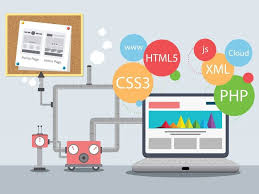
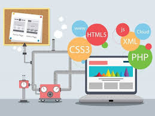
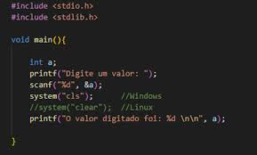

O Técnico em Informática é um profissional capacitado para atuar no suporte, manutenção,
instalação e desenvolvimento de sistemas e equipamentos relacionados à área de
tecnologia da informação (TI).
Esse profissional trabalha com computadores, redes, sistemas operacionais, aplicativos e
outros dispositivos tecnológicos,
desempenhando um papel fundamental nas empresas e em outros contextos que utilizam
recursos tecnológicos. A seguir, explico
algumas áreas de atuação e as principais responsabilidades desse profissional:
1. Áreas de Atuação
O Técnico em Informática pode atuar em diversos setores, incluindo:
Suporte Técnico: Presta suporte e assistência a usuários, solucionando problemas de
software e hardware, instalando e configurando
sistemas operacionais, aplicativos, redes e dispositivos.
Manutenção de Computadores: Realiza a manutenção preventiva e corretiva de hardware
(placas, processadores, memória, etc.) e realiza
upgrades para melhorar o desempenho dos equipamentos.
Redes de Computadores: Instala e configura redes locais (LAN) e redes de longa distância
(WAN), além de gerenciar a segurança das
informações e a conectividade entre os dispositivos.
Desenvolvimento de Sistemas: Embora o foco do técnico seja mais voltado à parte
operacional, alguns cursos incluem conhecimentos em
programação e desenvolvimento de sistemas simples.
Gestão de Banco de Dados: Administra bancos de dados, garantindo que os dados sejam
armazenados, protegidos e acessados de maneira
eficiente.
Segurança da Informação: Monitora e implementa soluções de segurança para evitar ataques
cibernéticos, como vírus, malware e invasões.
2. Habilidades e Competências
Para atuar como Técnico em Informática, o profissional deve possuir algumas habilidades
essenciais:
Conhecimento em Sistemas Operacionais: Domínio de sistemas como Windows, Linux e macOS,
além de saber configurá-los e solucioná-los
em caso de falhas.
Redes de Computadores: Capacidade de configurar roteadores, switches, além de entender
protocolos de comunicação (como TCP/IP).
Noções de Programação: Conhecimento básico em linguagens como Python, Java ou C++ pode
ser útil, mas não é a principal atribuição do
técnico.
Comunicação e Relacionamento com o Cliente: Habilidades de comunicação para entender
problemas dos usuários e explicar soluções de
maneira clara.
Diagnóstico e Resolução de Problemas: Capacidade de identificar falhas rapidamente e
encontrar soluções eficazes.
Atualização Constante: A área de tecnologia está em constante evolução, e o profissional
precisa estar sempre se atualizando para lidar
com novas tecnologias e ameaças cibernéticas.
3. Mercado de Trabalho
O mercado para Técnicos em Informática é amplo e crescente, pois a tecnologia está cada
vez mais presente em todos os aspectos da
sociedade. Empresas de diversos setores contratam esse profissional para garantir a
manutenção de seus sistemas e infraestrutura
tecnológica. Além disso, as oportunidades não se limitam ao setor privado, já que órgãos
públicos e escolas também necessitam de suporte
técnico constante.
4. Formação e Certificações
A formação para se tornar Técnico em Informática geralmente se dá por meio de cursos
técnicos de nível médio, com duração que varia
entre 1 e 2 anos. Esses cursos podem ser oferecidos por escolas técnicas, instituições
de ensino profissionalizantes e até mesmo em
formato online.
Além do curso técnico, o profissional pode buscar certificações específicas, como:
CompTIA A+: Certificação básica para técnicos de TI, que valida habilidades em hardware,
redes e segurança.
Cisco Certified Network Associate (CCNA): Para quem deseja se especializar em redes de
computadores.
Microsoft Certified IT Professional (MCITP): Para quem se dedica à administração de
sistemas Microsoft.
5. Perspectivas de Carreira
Com a evolução da tecnologia, o Técnico em Informática pode crescer na carreira,
buscando especializações em áreas como segurança da
informação, redes, programação ou até mesmo migrar para cargos de gestão de TI.
Dependendo da experiência e da formação contínua, é
possível avançar para funções de liderança, como coordenador de TI, analista de
sistemas, entre outras.
Conclusão
O Técnico em Informática é um profissional crucial para o bom funcionamento das
tecnologias dentro de empresas e instituições.
Com a demanda crescente por profissionais qualificados em TI, esse campo oferece boas
perspectivas de crescimento, além de um mercado de
trabalho dinâmico e em constante evolução.
Escola Estadual Raul Soares,praça Getúlio Vargas-130 Centro.Ubá - MG Telefone:(32) 3021-3523
| Curso Técnico de Informática - Lavínia Gonçalves |